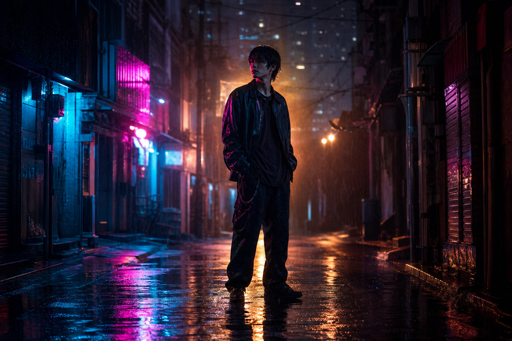
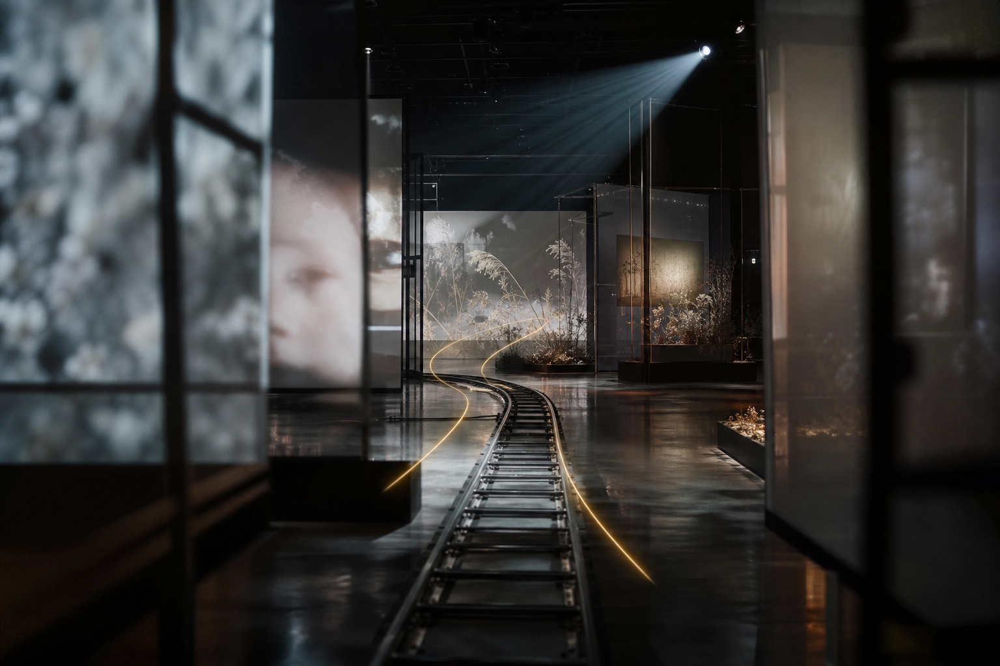
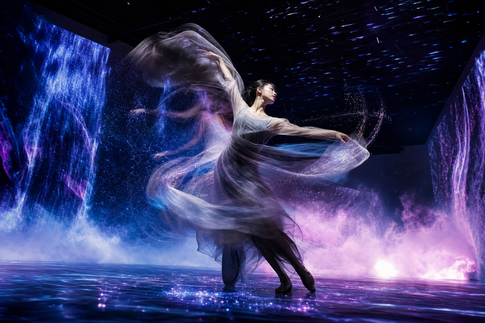
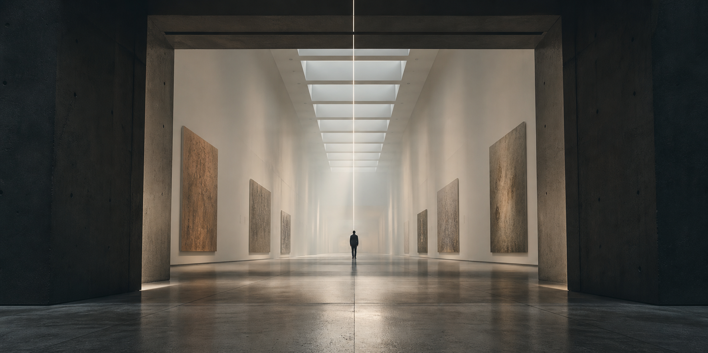

시간대
색온도와 그림자의 길이를 결정합니다.
golden hourblue hourovercast noonmidnight citydawn mistlate afternoon sun
슬라이드처럼 넘기는 자료가 아니라, 제작 중 옆에 띄워두고 바로 복사·조합하는 조명, 카메라무브, 무빙, 구도 예시 모음입니다.
아래 이미지는 GPT Image 2 high로 생성한 작은 예시 썸네일입니다. HTML 안에서는 참고 이미지로만 쓰고, 실제 프롬프트 예시는 텍스트 카드로 풍부하게 넣었습니다.




조명은 “분위기”가 아니라 물리 조건입니다. 시간대, 빛의 방향, 빛의 질감을 같이 써야 결과가 안정됩니다.
색온도와 그림자의 길이를 결정합니다.
대상의 윤곽과 표정 정보량을 조절합니다.
빛이 공기와 표면을 통과하는 느낌입니다.
| 목적 | 조명 프롬프트 | 언제 쓰나 |
|---|---|---|
| 감성적 진입 | golden hour backlight, warm rim light, soft haze | 인물·여행·회상 장면 |
| 도시 긴장감 | neon side light, wet asphalt reflections, high contrast shadows | 사이버펑크, 야간 골목, 광고 컷 |
| 신비로운 실루엣 | moonlit silhouette, cool blue fog, thin rim light | 숲, 해변, 몽환적 퍼포먼스 |
| 전시장 분위기 | soft projection light, subtle haze, reflective floor glow | 미디어아트, 설치, 공연 기록 |
| 제품 질감 | sharp rim light, caustic reflections, glossy highlights | 유리, 금속, 물방울, 매크로 |
카메라무브는 관객의 감정을 움직이는 문장입니다. “움직인다”보다 어느 방향으로, 얼마나 빠르게, 어떤 렌즈로 움직이는지 써야 합니다.
대상으로 집중, 감정 압축.
대상과 동행, 여정감.
대상을 탐색하거나 의식적으로 강조.
발견, 위압감, 긴장감.
영상 프롬프트에서 무빙은 세 덩어리로 나누면 좋습니다. 사람이 움직이는지, 배경이 움직이는지, 전체 리듬이 느린지 빠른지 분리하세요.
구도는 모델에게 화면 안에서 무엇을 중요하게 볼지 알려줍니다. 샷 크기, 앵글, 프레임 장치를 같이 적으면 안정적입니다.
공간 정보와 감정 정보의 비율.
힘, 불안, 구조감을 결정.
시선을 어느 곳으로 보낼지 지정.
아래 문장들을 그대로 복사한 뒤, 장면만 바꿔도 됩니다. 핵심은 하나의 장면에 조명, 카메라무브, 무빙, 구도를 모두 붙이는 것입니다.
막힐 때는 행 하나씩 골라 붙이면 됩니다. 예: “감성적 진입” 행에서 조명·무브·무빙·구도를 모두 선택.
생성형 영상은 불안정한 카메라, 로고/텍스트, 갑작스러운 컷, 물리적으로 이상한 움직임이 자주 생깁니다.
[scene], [lighting], [camera move], [subject motion], [environment motion], [composition/framing], cinematic, smooth motion, stable camera, no text, no watermark, no logo